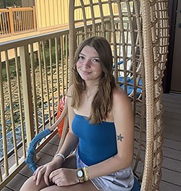

Carleigh Carbonaro
Contact
16 Hunter Lane, Somers NY 10589 | (914) 506-2331 | carbo2cs@dukes.jmu.edu
Check out my portfolio!
Objective
To obtain a part-time job during my undergraduate education at JMU.
Education
James Madison University
Media Arts and Design – BS
Concentration in Interactive Design
Expected May 2026
GPA 3.30/4.0
Work Experience
Mount Pleasant Cottage School (Mount Pleasant, NY)
Teacher’s Aide (June 2023-August 2024)
- Instructed and cared for children with disabilities and behavioral challenges
- Provided 1:1 instruction for grades K-6 in topics covering the NYS curriculum
SkyZone Trampoline Park (Mount Kisco, NY)
Party Host (July 2019-July 2023)
- Supervised groups of children in size ranging from 10-30 kids at a time
- Hosted and served children’s parties
- Trained new employees in the company’s codes and standards
Taste Deli (Somers, NY)
Deli Clerk (May 2021-January 2022)
- Answered phone calls from customers placing orders for delivery or takeout
- Prepared and packaged orders for customers
- Worked the cash register and interacted with customers
Skills
Computer Skills
Word, PowerPoint, Adobe Illustrator
Interests
Fitness, colored pencil art, crochet